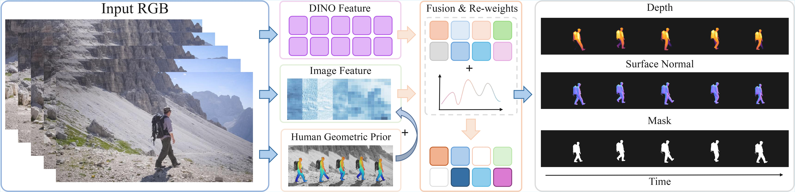
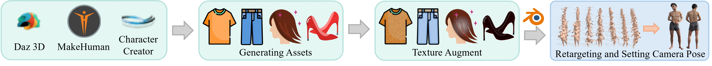

Abstract
In this work, we focus on the challenge of temporally consistent human-centric dense prediction across video sequences. Existing models achieve strong per-frame accuracy but often flicker under motion, occlusion, and lighting changes, and they rarely have paired human video supervision for multiple dense tasks.
We address this gap with a scalable synthetic data pipeline that generates photorealistic human frames and motion-aligned sequences with pixel-accurate depth, normals, and masks. Unlike prior static data synthetic pipelines, our pipeline provides both frame-level labels for spatial learning and sequence-level supervision for temporal learning.
Building on this, we train a unified ViT-based dense predictor that (i) injects an explicit human geometric prior via CSE embeddings and (ii) improves geometry-feature reliability with a lightweight channel reweighting module after feature fusion. Our two-stage training strategy, combining static pretraining with dynamic sequence supervision, enables the model first to acquire robust spatial representations and then refine temporal consistency across motion-aligned sequences.
Extensive experiments show that we achieve state-of-the-art performance on THuman2.1 and Hi4D and generalize effectively to in-the-wild videos.
Pipeline

Given a sequence of RGB frames, our model extracts DINO features, global image features, and human geometric priors. These features are fused and re-weighted to generate enhanced representations for predicting temporally consistent depth, surface normals, and segmentation masks.
Data Pipeline

We first generate clothed human models using DAZ 3D, MakeHuman, and Character Creator. Texture augmentations are applied to increase appearance diversity. Each model is then animated by retargeting AMASS motion sequences. Finally, models are placed in Blender with randomized cameras for rendering RGB images together with depth, surface normals, and segmentation masks.
Quantitative Comparison
Image Results

Quantitative comparison for depth estimation on THuman2.1 and Hi4D dataset. Note that the parameter size of Sapiens-0.3B is equivalent to that of large models of ViT-based methods.